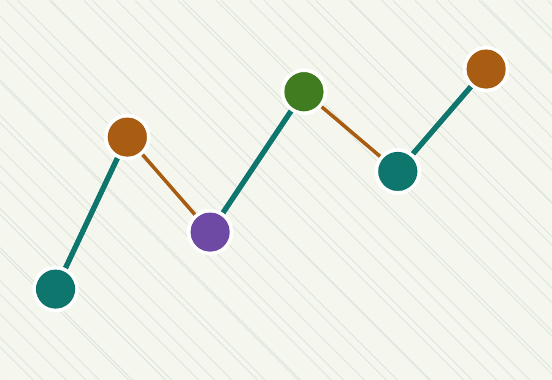

Security resources, cleaned up
Cyber Tool Atlas
A faster, easier directory for OSINT, pentesting, privacy, forensics, learning, hardware, media, and security utilities.
0
links
0
categories
Fast
search

Use these resources only for learning, defense, research, or systems you are authorized to test.
Directory
All Tools
No matches found
Try a broader word or switch back to all categories.